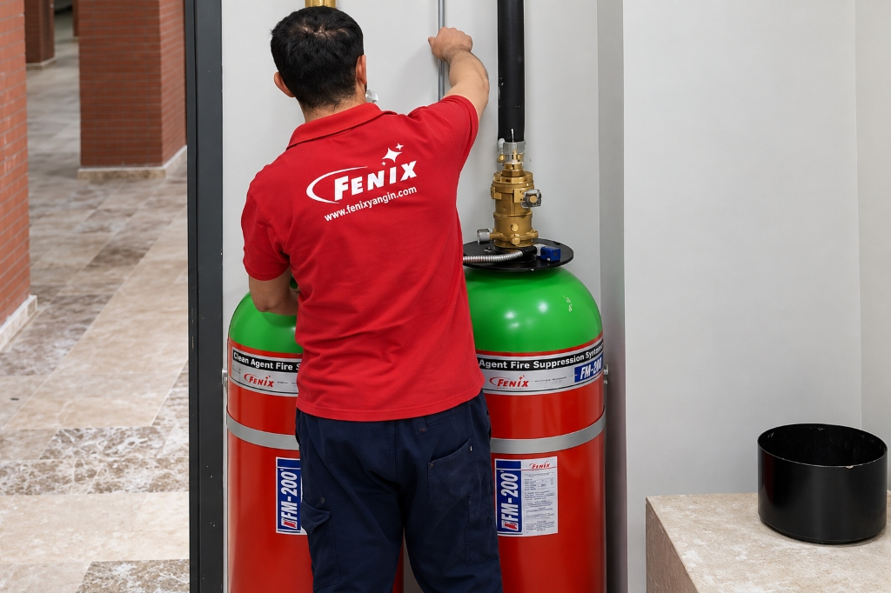
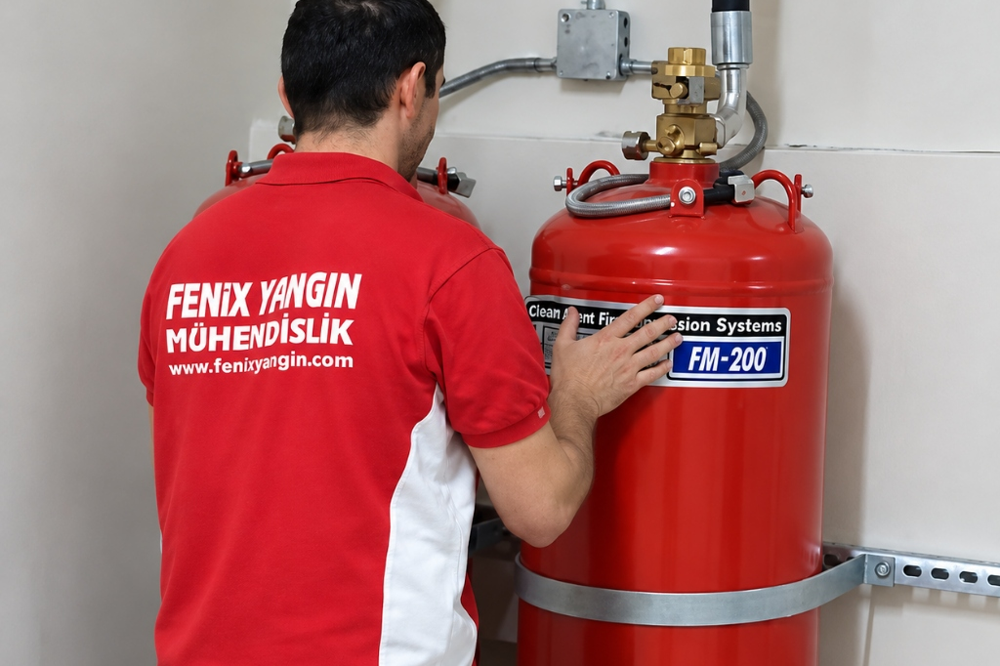

FM200
Gazlı Söndürme Sistemi Bakımı
Kritik mahallerde kesintisiz yangın güvenliği ve sistem sürekliliği.
FM200 gazlı yangın söndürme sistemlerinizin yangın anında sorunsuz çalışabilmesi için silindir basınçları, gaz seviyeleri, mekanik bağlantılar ve algılama hatları uzman teknik ekiplerimizce düzenli olarak kontrol edilir.

FM200 Bakımının Önemi
Yangın söndürme sistemleri, tesislerde sessizce bekleyen ve acil bir durumda saniyeler içinde devreye girmesi gereken kritik güvenlik altyapılarıdır. Olası bir yangın anında sistemin eksiksiz çalışabilmesi, düzenli aralıklarla yapılacak teknik kontrollerle mümkündür.
Fenix Yangın teknik kadrosu; silindirlerdeki gaz miktarından basınç manometrelerine, boru ve nozul hatlarından kontrol paneli simülasyonuna kadar tüm aşamaları yerinde inceler ve sistemin faal durumda olduğunu doğrular.

FM200 Sistem Bakımı Nasıl Yapılır?
Fenix Yangın teknik personeli, FM200 gazlı söndürme sistemlerinin periyodik bakımını adım adım ve güvenlik prosedürlerine uygun şekilde yürütür:
FM200 Bakımında Hangi Bileşenler Denetlenir?
Periyodik bakım kapsamında sistemin tüm mekanik, hidrolik ve elektronik bileşenleri ayrı ayrı teste tabi tutulur.
Tüp gövdesi, bağlantı kelepçeleri ve gaz depolama durumu denetlenir.
Silindir üzerindeki manometrelerin çalışma basıncı sınırları kontrol edilir.
Gazın mahale homojen yayılmasını sağlayan nozul açıklıkları incelenir.
Çek valfler, esnek hortumlar ve boru bağlantı elemanları kontrol edilir.
Siren, flaşör, dedektör hatları ve tetikleme modülleri test edilir.
Yerinde Kontrol ve Düzenli Raporlama
Fenix Yangın teknik personeli sahada gerçekleştirdiği tüm bakım işlemlerinde güvenlik protokollerine titizlikle uyar. Tesisinizde iş akışını kesintiye uğratmadan sistemlerin faal kalması sağlanır:
Periyodik Bakım Raporu
Her bakım çalışmasının ardından sistemin mevcut durumunu, ölçülen basınç değerlerini ve yapılan teknik kontrolleri içeren yazılı servis raporu düzenlenerek yetkililere sunulur.
Bakım Randevusu AlınNeden Düzenli FM200 Bakımı Yaptırmalısınız?
Zamanında yapılan kontroller, sisteminizin ihtiyaç duyulduğu anda eksiksiz çalışmasını garanti altına alır.
Basınç düşüşleri, vana yıpranmaları ve conta kaçakları yangın anından önce tespit edilerek giderilir.
Algılama dedektörleri temizlenip test edilerek toz veya arıza kaynaklı gereksiz alarmlar önlenir.
Sunucu odaları ve kritik hacimlerdeki değerli donanımlarınız her an güvenli koruma altında tutulur.
Yapılan tüm işlemler servis formu ile kayıt altına alınarak sistemin faal durumda olduğu belgelenir.
FM200 Gazlı Söndürme Sisteminin Yapısı
FM200 yangın söndürme altyapısı, birbiriyle entegre çalışan üç temel mühendislik katmanından oluşur.
Sıvılaştırılmış FM200 söndürme ajanı ve basınçlandırıcı azot barındıran dayanıklı çelik tüpler.
Yüksek basınca dayanıklı manifold, çek valfler, boru tesisatı ve özel boşaltma nozulları.
Yangın söndürme kontrol paneli, duman dedektörleri, sirenler ve selenoid tetikleme donanımı.
FM200 Bakımı Hakkında Merak Edilenler
FM200 gazlı söndürme sistemlerinin bakımı ile ilgili en sık karşılaşılan sorular.
FM200 gazlı yangın söndürme sistemlerinin yılda en az bir kez yetkili teknik ekip tarafından kapsamlı periyodik bakımdan geçirilmesi önerilir. Ayrıca sistem aktif olarak devreye girdiğinde veya herhangi bir arıza uyarısı verdiğinde gecikmeksizin kontrol edilmelidir.
Evet. Bakım çalışmaları sırasında sistem geçici olarak güvenli test moduna alınır. Mahalde bulunan sunucular, elektrik panoları veya personelin çalışması kesintiye uğramadan kontroller gerçekleştirilir.
Hayır. Uzman teknisyenlerimiz bakım başlangıcında silindir vanaları üzerindeki elektriksel ve mekanik tetikleme mekanizmalarını (selenoid bobinleri) mekanik olarak emniyete alır. Bu sayede simülasyon testleri sırasında gaz boşalması riski tamamen ortadan kaldırılır.
Silindir üzerindeki basınç manometresinin yeşil çalışma alanının altına düşmesi veya periyodik kontrolde yapılan seviye ve ağırlık ölçümlerinde gaz miktarının azalması kaçak olduğunu gösterir. Bu durumda sistem dolum ve sızdırmazlık kontrolüne alınmalıdır.
Bakım tamamlandıktan sonra yapılan tüm testlerin, ölçülen basınç ve seviye değerlerinin, kontrol edilen mekanik aksamların yer aldığı detaylı Periyodik Bakım ve Servis Formu hazırlanarak yetkililere teslim edilir.
İlgili Hizmetler ve Sistemler
Fenix Yangın bünyesinde FM200 sistemleri için sunduğumuz diğer mühendislik çözümleri.
HFC-227ea temiz gazlı yangın söndürme sistemlerinin anahtar teslim kurulumu.
Sistem İncele →Boşalan veya basıncı düşen FM200 silindirlerinin sertifikalı dolumu ve basınçlandırılması.
Dolum Hizmeti →Kapı fanı testi ile mahalin gaz tutma süresinin doğrulanması ve kaçak tespiti.
Test Detayları →FM200 Sisteminizin Bakımını Planlayın
Sisteminizin faal ve güvenli kalması için uzman teknik kadromuzdan bakım randevusu alın.